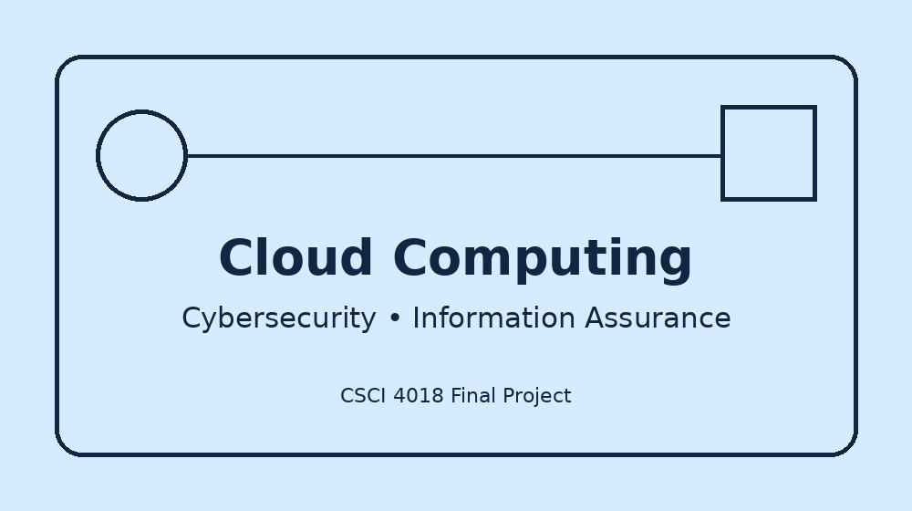

Cesar Abanto's Personal Resume Website

Welcome to my personal website. This site is an online version of my resume and highlights my current technical skills, technical learning goals, and professional career goals in computing, cloud computing, and cybersecurity.
I am a Computer Information Systems student at Austin Peay State University with a concentration in Information Assurance and Security. My background includes U.S. Army technical experience, cloud computing coursework, Linux administration, network security, and hands-on AWS labs.
My goal is to continue building practical skills that support secure, reliable, and efficient information systems for enterprise and government environments.